CS184/284A Spring 2025 Homework 2 Write-Up
Link to webpage: (TODO) https://cal-cs184-student.github.io/hw-webpages-querulousfalconer/hw2/index.html
Link to GitHub repository: (TODO) GitHub
Overview (3 pts)
This assignment implements a mesh editor with two main thrusts: Bezier curves and surfaces (evaluation via de Casteljau’s algorithm) and triangle mesh editing using a half-edge data structure.
In Section I, we implemented 1D de Casteljau for Bezier curves (one step of linear interpolation per level) and extended it to Bezier surfaces using a separable 2D scheme: evaluate each row at \(u\), then evaluate the resulting column of points at \(v\) to get the surface point at \((u,v)\).
In Section II, we worked with the half-edge mesh: area-weighted vertex normals for Phong shading; edge flip (reconnect two triangles by swapping the diagonal); edge split (insert a vertex at the edge midpoint and split adjacent triangles, with optional support for boundary edges); and Loop subdivision for mesh upsampling (4–1 split + flip, then Loop smoothing rules). We also added guards (iteration caps and safe fallbacks) so subdivision never freezes on large or malformed meshes, and an optional linear (midpoint) subdivision scheme (L = Loop, K = linear).
What I learned: The half-edge structure makes local operations (flip, split) manageable by making adjacency explicit; pointer bookkeeping is easy to get wrong, so methodically assigning every half-edge’s next/twin/vertex/edge/face and drawing small diagrams helped. Loop subdivision shows how a simple refinement rule (split + smooth) yields smooth limit surfaces, and why pre-processing (symmetrizing the cube) matters for symmetric results.
Section I: Bezier Curves and Surfaces
Part 1: Bezier curves with 1D de Casteljau subdivision (13 pts)
De Casteljau’s algorithm: Given \(n\) control points \(p_1, \ldots, p_n\) and a parameter \(t \in [0,1]\), we compute one level of subdivision by linear interpolation: \(p_i' = \mathrm{lerp}(p_i, p_{i+1}, t) = (1-t)p_i + t\,p_{i+1}\) for \(i=1,\ldots,n-1\). Repeating this step reduces the number of points by one each time; when a single point remains, it lies on the Bezier curve at parameter \(t\).
Implementation: In BezierCurve::evaluateStep, we take the input vector of 2D points and the class member t, then push back \((1-t)\, \texttt{points[i]} + t\, \texttt{points[i+1]}\) for each consecutive pair. The rest of the pipeline (repeated stepping and drawing) is provided; we only implement this one level.
Custom Bezier curve (6 control points): I created a .bzc file with 6 control points of my choosing and used it for the screenshots below. (Replace with your own curve and paths if you use a different file.)
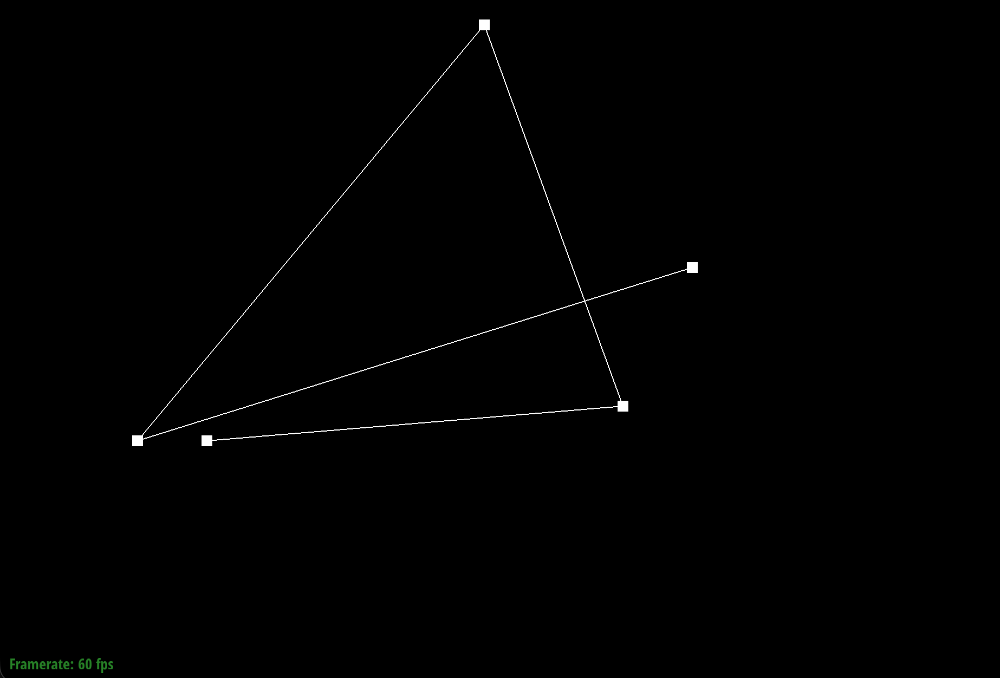
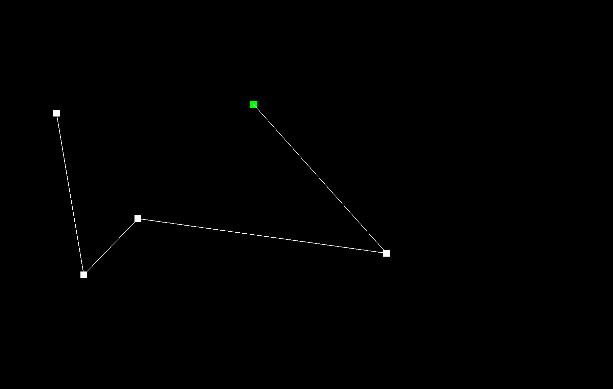
Part 2: Bezier surfaces with separable 1D de Casteljau (15 pts)
Extension to surfaces: A Bezier patch has an \(n\times n\) grid of control points. For parameters \((u,v)\) we use de Casteljau twice in a separable way: (1) For each row \(i\), treat the \(n\) control points in that row as a 1D Bezier curve and evaluate at \(u\) to get a point \(P_i\). (2) The \(n\) points \(P_0,\ldots,P_{n-1}\) form a “column” curve; evaluate that curve at \(v\) with de Casteljau to get the final point on the surface at \((u,v)\).
Implementation: BezierPatch::evaluateStep(points, t) does one level of de Casteljau in 3D (same as Part 1 but with Vector3D and parameter t). evaluate1D(points, t) repeatedly calls evaluateStep until one point remains and returns it. evaluate(u, v) builds the column of row evaluations at \(u\) (one evaluate1D(controlPoints[i], u) per row), then returns evaluate1D(columnPoints, v).
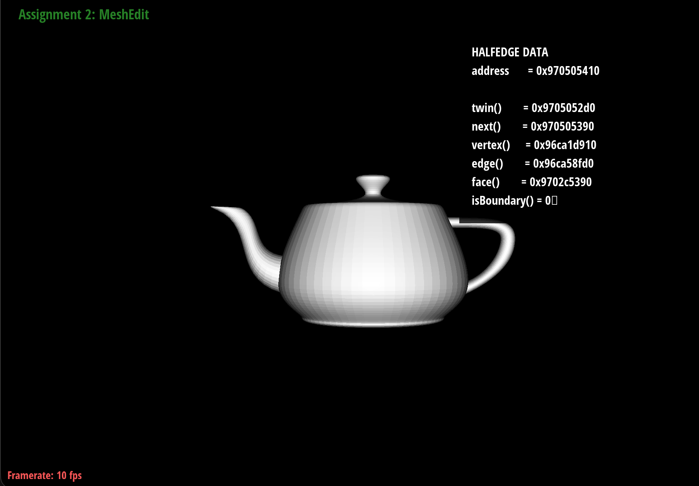
bez/teapot.bez evaluated by our implementation.Section II: Triangle Meshes and Half-Edge Data Structure
Part 3: Area-weighted vertex normals (12 pts)
Implementation: For each vertex we iterate over incident faces using the half-edge structure: start at v->halfedge() and repeatedly go h->twin()->next() until we return to the start. For each non-boundary face we get the three vertices of the triangle, compute the (unnormalized) face normal via \(\mathbf{n} = (\mathbf{b}-\mathbf{a})\times(\mathbf{c}-\mathbf{a})\), and add \((\text{area})\,\mathbf{n}/|\mathbf{n}|\) to an accumulator, with area \(= \frac{1}{2}|\mathbf{n}|\). The result is normalized and returned; if the sum is zero we return a default up vector. We use HalfedgeCIter because normal() is const.
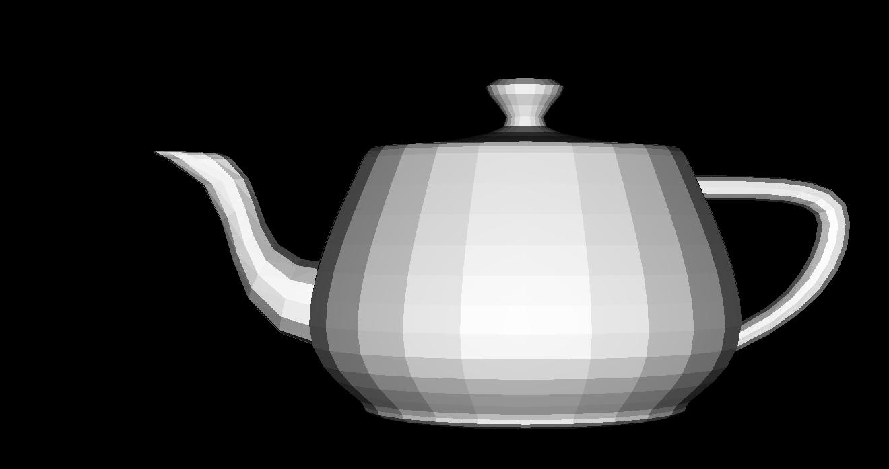
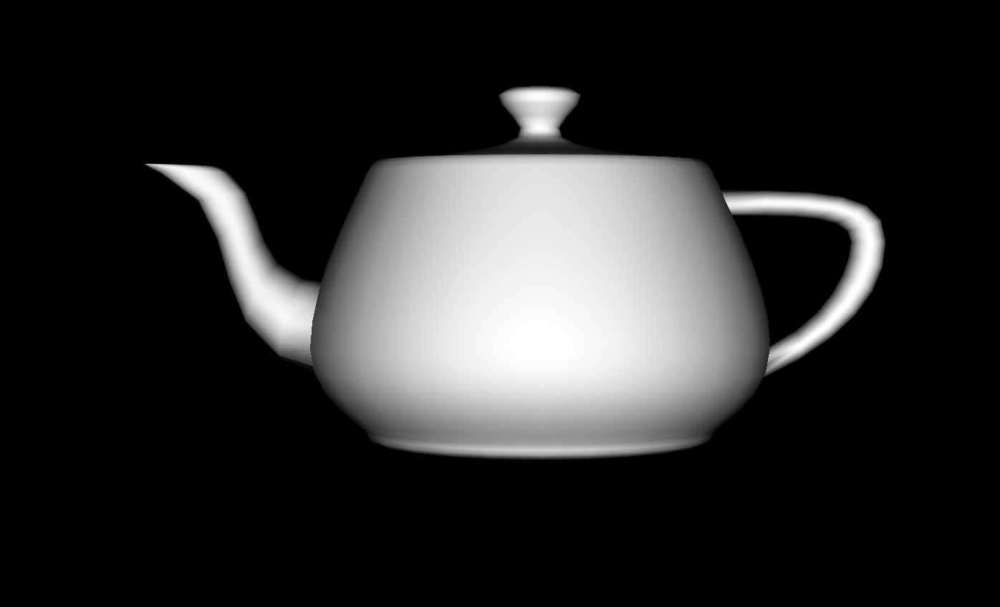
Part 4: Edge flip (12 pts)
Implementation: Given edge between triangles \((a,b,c)\) and \((c,b,d)\), we flip to triangles \((a,d,c)\) and \((a,b,d)\). We return immediately if either adjacent face is boundary. We collect the four vertices (a = h0->next()->next()->vertex(), b = h0->vertex(), c = h1->vertex(), d = h1->next()->next()->vertex()) and the four “wing” half-edges (h_ab, h_ca, h_bd, h_dc). We repurpose the two half-edges on the edge: h0 becomes a→d and h1 becomes d→a, set their next/twin/vertex/edge/face with setNeighbors, update the next pointers of h_ca and h_ab to close the new triangles, then set halfedge pointers for vertices a,b,c,d, the two faces, and the edge. We assign every affected element explicitly to avoid missing pointers.
Debugging: Drawing the before/after diagram and listing every half-edge’s next/twin/vertex/edge/face (and each vertex/face/edge’s halfedge) ensured nothing was left dangling. Using the provided check_for helped verify that the right elements pointed to the flipped edge and faces.
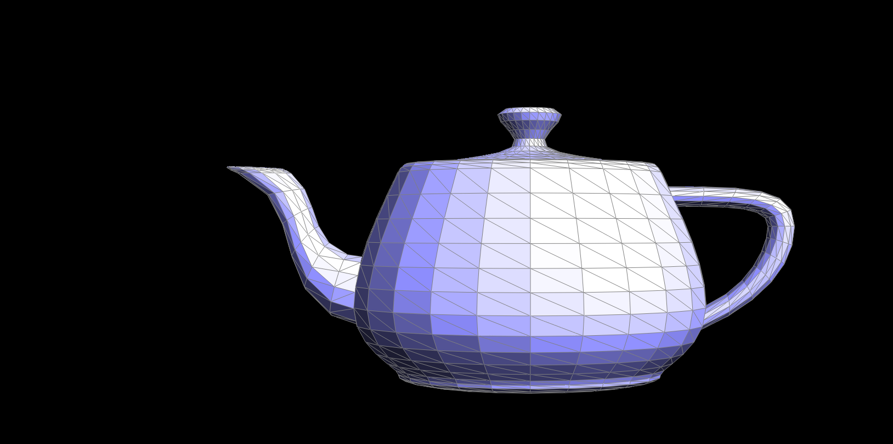
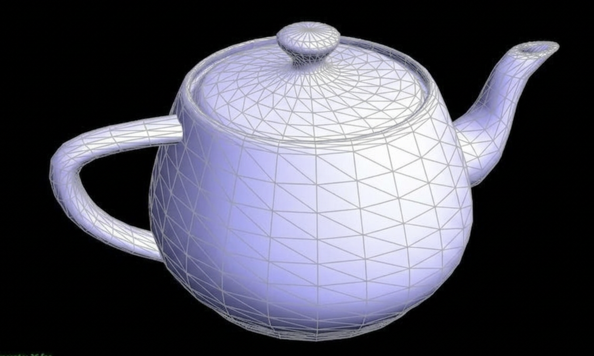
Part 5: Edge split (20 pts)
Implementation: For an interior edge between triangles \((a,b,c)\) and \((c,b,d)\), we create a new vertex \(m\) at the edge midpoint, one new edge (m,c), two new edges (a,m) and (d,m), two new faces, and six new half-edges. We reuse the original edge for (b,m) and one of its half-edges for (c,m). All half-edges are wired with setNeighbors so the four new triangles are (a,b,m), (a,m,c), (m,b,d), (m,d,c). We set vertex/edge/face halfedge pointers and, for Loop subdivision, set isNew on the new vertex and on the two “cross” edges (a,m) and (d,m), and false on the two half-edges of the split edge.
Boundary edges: If one side of the edge is a boundary face, we only split the non-boundary triangle: we add \(m\), one new edge (m,c), one new edge (a,m), one new face, and four new half-edges; the boundary loop is updated so it goes …→c→m→b→… via a new half-edge m→b. We ensure the half-edge on the interior side is h0 and on the boundary side is h1 (swap if needed), then perform the reduced set of pointer updates.
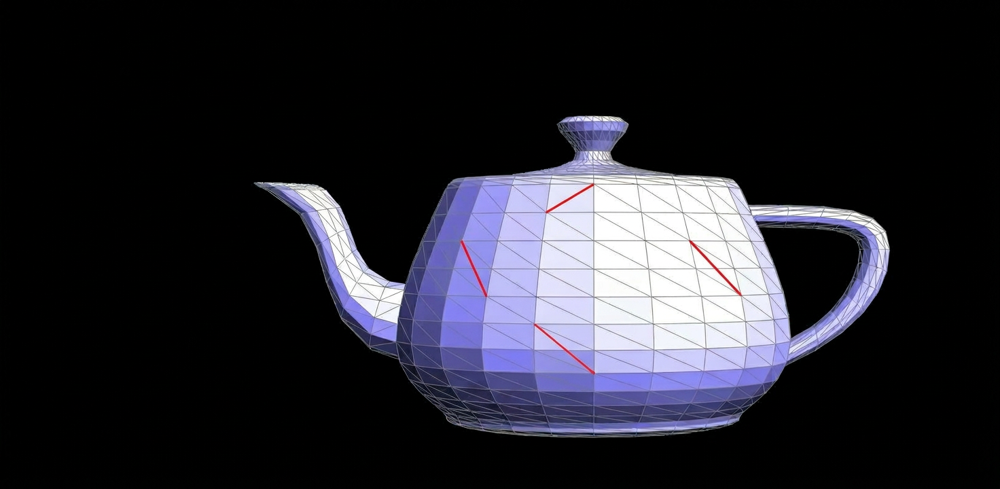
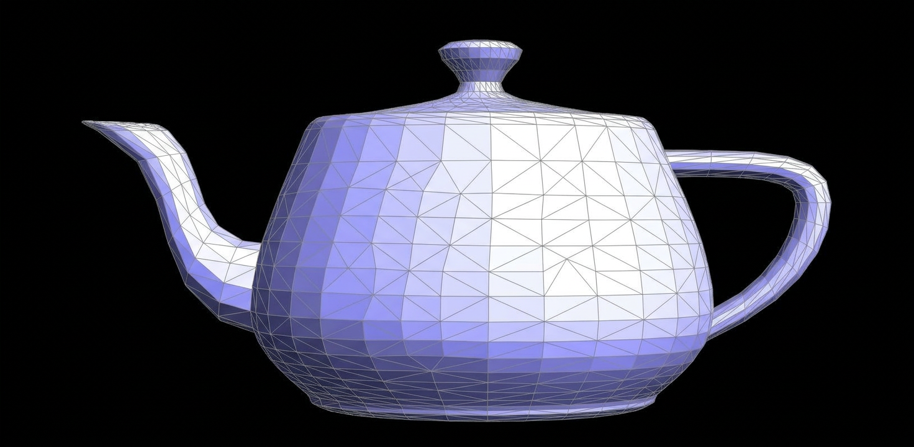
If you implemented boundary edge split, add a screenshot of a mesh with boundary (e.g. a plane or a cube with a hole) before and after splitting a boundary edge:

Part 6: Loop subdivision for mesh upsampling (25 pts)
Implementation: We follow the recommended order: (A) Compute all new positions on the original mesh; (B) split every edge and flip new edges that connect old and new vertices; (C) copy newPosition into position.
- Old vertices: For each vertex we do a single capped walk around neighbors (no
isBoundary()ordegree()to avoid unbounded loops). We accumulate interior neighbors and detect a boundary half-edge if any. Boundary vertices use \((6/8)\,\mathbf{p} + (1/8)(\mathbf{n}_1+\mathbf{n}_2)\); interior vertices use \((1-nu)\,\mathbf{p} + u\,\sum \mathbf{n}_i\) with the usual Loop \(u\) (special case \(n=3\), else formula with \(\cos(2\pi/n)\)). - New (edge) vertices: Interior edges: \(\frac{3}{8}(A+B) + \frac{1}{8}(C+D)\). Boundary edges: \(\frac{1}{2}(A+B)\).
- Topology: Collect original edges in a vector, split each (boundary edges handled by
splitEdge), then flip every edge withisNew == true(flip is no-op on boundary).
To prevent freezes on large or malformed meshes we cap: per-vertex walk steps, total walk steps, and max vertices/edges per pass; we also set fallbacks (e.g. newPosition = position) when caps are hit and finish copying positions for any remaining vertices.
Observations: After Loop subdivision, sharp corners and edges become rounded because the smoothing rule blends positions. Pre-splitting edges near sharp features can better preserve creases by giving the subdivision more geometry to work with. (Add your own screenshots and short notes.)
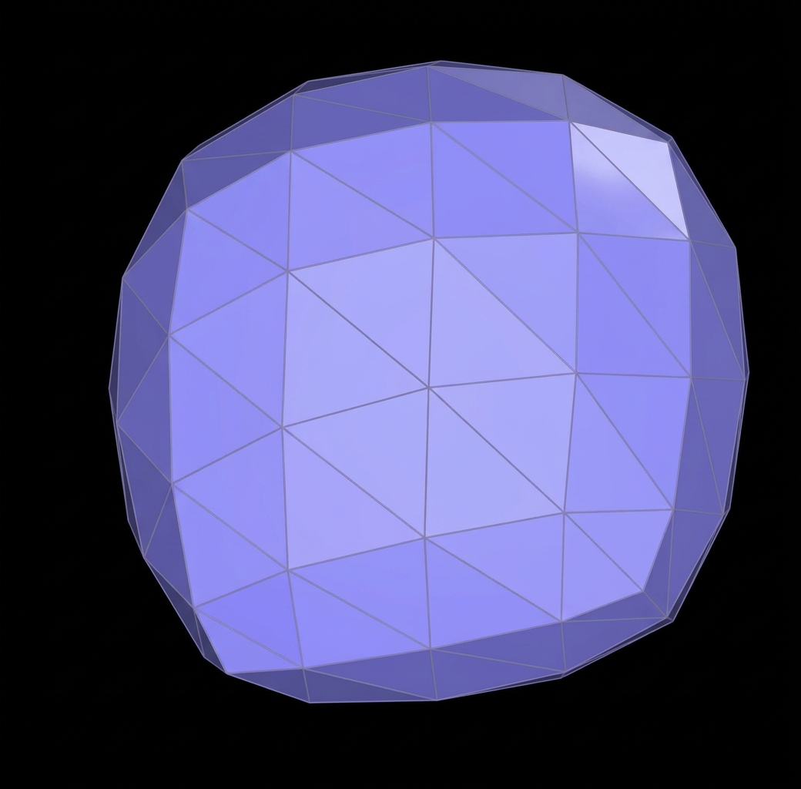
Cube asymmetry and pre-processing: The cube has asymmetric triangulation (e.g. diagonal on some faces), so repeated Loop subdivision shrinks and smooths it in a slightly asymmetric way. Pre-processing the cube with edge flips and splits so that each face has the same triangulation pattern (e.g. symmetric diagonals or a symmetric 4-triangle split) makes the subdivided result more symmetric. Document with before/after screenshots and a brief explanation of why asymmetry occurs and how your pre-processing helps.
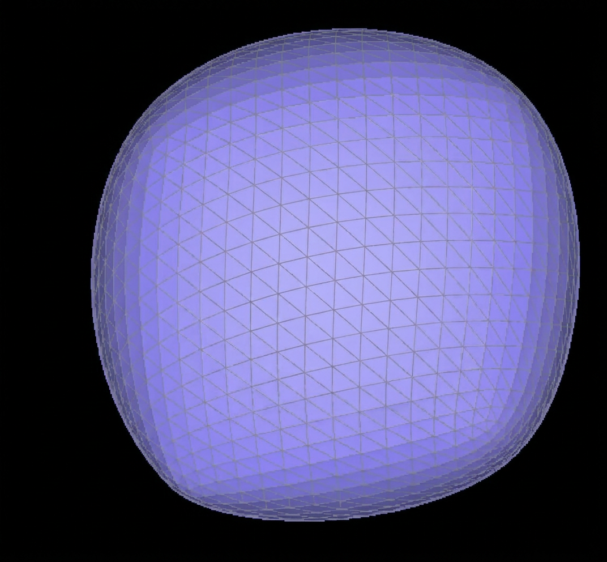
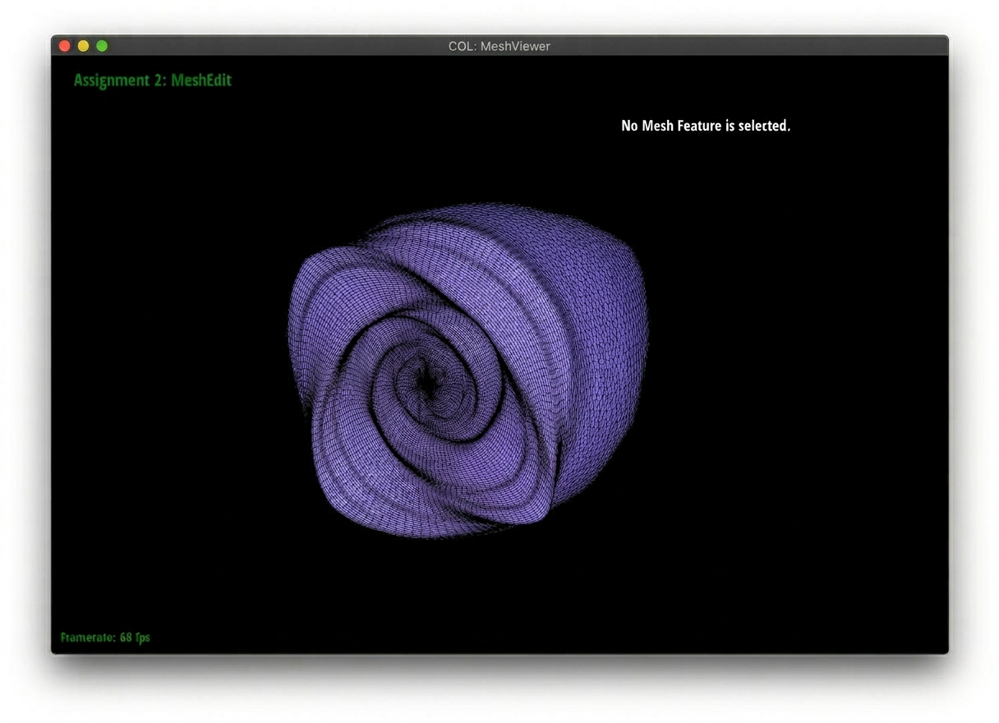
Extra credit (Loop with boundary + linear subdivision): We support meshes with boundary in Loop subdivision (boundary vertex and edge rules above; splitEdge handles boundary edges). We also implemented linear (midpoint) subdivision: same 4–1 topology as Loop, but new vertices are edge midpoints and old vertices keep their positions (sharper result). Use L for Loop and K for linear. (Add screenshots if you want to show boundary Loop or linear subdivision.)

(Optional) Section III: Potential Extra Credit - Art Competition
If you did the art competition, describe your model and include screenshots here.